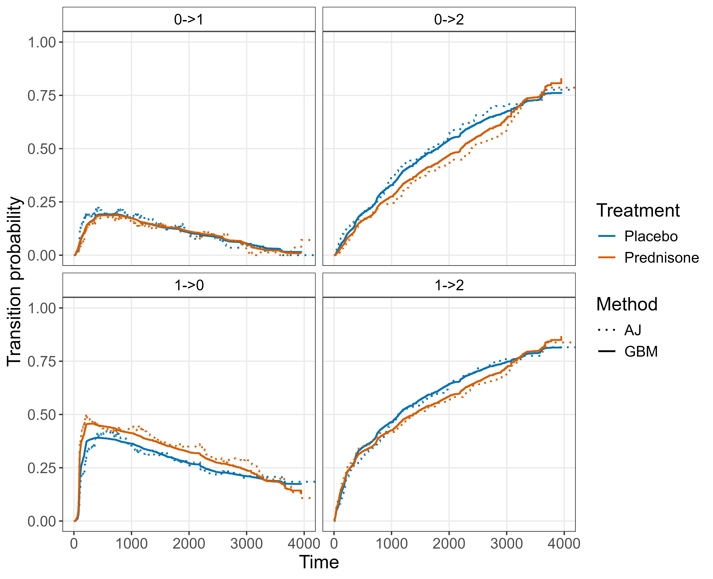

21 Reductions for Event History Analysis
Chapter 4 introduced event history analysis, showing that more complex time-to-event settings, including competing risks and multi-state models, can be characterized by cause-specific or transition-specific hazards. In particular, the cumulative incidence function (CIF) (4.8) was shown to depend on all cause-specific hazards, and transition probabilities in multi-state models were expressed via the product integral over all transition-specific hazards (4.18).
This chapter leverages those relationships to formulate event history analysis as a reduction to multiple single-event hazard estimation problems. The key principle is to separately model each cause as the event of interest and treat the others as censoring events, repeating this for all possible causes. This enables any distribution-predicting single-event model to be applied in the more general event history setting by first predicting the cause-specific survival distributions and then combining them into CIFs or transition probabilities.
21.1 Competing risks: cause-specific hazards
Recall the competing-risks setting of Section 4.2: subjects start in an initial state \(0\) and may transition to one of \(Q\) absorbing states \(q \in \{1,\ldots,Q\}\), observed as data \((\mathbf{x}_i, t_i, q_i)\) with \(q_i \in \{0\}\cup \{1,\ldots, Q\}\) the status observed for subject \(i\), where \(q_i=0\) encodes censoring. Recall also the cause-specific hazard \(h_q(\tau \mid \mathbf{x})\) (4.3), cumulative hazard \(H_q(\tau \mid \mathbf{x})\) (4.4), and cumulative incidence function \(F_q(\tau \mid \mathbf{x})\) (4.8), as well as the all-cause survival probability \(S(\tau \mid \mathbf{x})\) (4.7), which is the probability of remaining free of any event.
The reduction principle is to estimate each cause-specific hazard, \(h_q\), separately by treating events of type \(q\) as the event of interest and all others as censoring. The resulting hazard estimates are then combined to estimate \(\hat{S}\) and \(\hat{F}_q\). Section 21.1.1 introduces this procedure by fitting each cause independently, whereas Section 21.1.2 presents a joint approach using a single stacked model.
21.1.1 Separate datasets
Figure 21.1 summarizes the cause-specific estimation approach where causes are estimated separately for three observations and two competing risks:
Create cause-specific datasets (Training). For each cause \(q \in \{1,\ldots,Q\}\), define the cause-specific status, \(\delta_{i,q} = \mathbb{I}(q_i = q)\), such that cause \(q\) remains the event of interest and all other causes are treated as censored at time \(t_i\). Then, define the cause-specific dataset \(\mathcal{D}_q = \{(\mathbf{x}_i, t_i, \delta_{i,q})\}^n_{i=1}\).
Fit \(Q\) single-event models (Training). Fit any of the distribution-predicting methods in Part III or partition-based reduction methods in Chapter 20 to the cause-specific datasets, \(\mathcal{D}_q\).
Predict cause-specific hazards (Predicting). For each cause \(q \in \{1,\ldots,Q\}\), for a new observation \(\mathbf{x}_*\), predict the cause-specific hazard function, \(\hat{h}_q(\cdot \mid \mathbf{x}_*)\), or cause-specific cumulative hazard function, \(\hat{H}_q(\cdot \mid \mathbf{x}_*)\). If required, obtain the corresponding cumulative hazard or hazard function from the predicted quantity via the relationships in Section 3.1.1.
Predict all-cause survival and CIFs (Predicting). Combine the cause-specific cumulative hazards into the all-cause survival probability (4.7),
\[ \hat{S}(\tau\mid\mathbf{x}_*) = \exp\!\left(-\sum_{q=1}^{Q} \hat{H}_q(\tau\mid\mathbf{x}_*)\right), \]
and compute the CIF (4.8):
\[ \hat{F}_q(\tau \mid \mathbf{x}_*) = \int_{0}^\tau \hat{S}(u \mid \mathbf{x}_*) \hat{h}_q(u \mid \mathbf{x}_*)\ \,\mathrm{d}u, \]
or the corresponding discrete form when the learner returns step-function (cumulative) hazards.

The clear advantage of this approach is that the cause-specific models are fitted independently. This provides considerable flexibility as, in principle, each cause can be modeled using a different learning algorithm, or the same algorithm with different hyperparameters. Independent models also make training embarrassingly parallel, as each model can be fitted and tuned separately (Section 2.5). However, fitting each cause independently means no information is shared across models. This can be a disadvantage when a cause has few events, since structure common to several causes, such as a shared baseline-hazard shape or similar covariate effects, cannot be exploited across them. A further, more practical drawback is that each model estimates its cause-specific cumulative hazard \(\hat{H}_q\) on its own time grid, so these estimates must be interpolated onto a common grid before they can be combined into the downstream quantities \(\hat{S}\) and \(\hat{F}_q\). This interpolation is usually computationally inexpensive (see the random forest discussion in Section 12.2.2).
Returning to the sir.adm example from Section 4.2.1: a Cox model (Section 11.2) and a single-event random survival forest (RSF; Chapter 12) are fitted using the above reduction (Figure 21.2). Both estimators use pneumonia status at admission as their only covariate and target the same stratified estimand. The resulting CIFs are compared to a non-parametric Aalen-Johansen baseline. The reduction-based RSF closely tracks the Aalen-Johansen baseline, with a small offset on the discharge CIF (top panels). The Cox PH curves are also close to the Aalen-Johansen estimates but again show differences for discharge, attributable to the proportional-hazards constraint.
![Faceted plot of cumulative incidence functions for two competing risks, discharge (top row) and death (bottom row), stratified by pneumonia status at admission (pneu = no on the left, pneu = yes on the right). Three estimators are compared: Aalen–Johansen (black dotted), cause-specific Cox proportional hazards (orange solid), and reduction-based random survival forest (blue solid). Across all four panels, the curves from the three methods overlap closely. For discharge, cumulative incidence rises rapidly and plateaus near 0.9 for patients without pneumonia and near 0.75 for patients with pneumonia. For death, cumulative incidence remains low for patients without pneumonia (around 0.08) and reaches approximately 0.25 for patients with pneumonia. Differences between estimators are small, with only minor deviations visible in the pneumonia group.](Figures/reductions/fig-p4c23-cif-marg-sir.png)
sir.adm for discharge (top row) and death (bottom row) stratified by pneumonia status at admission (columns), as estimated by the non-parametric Aalen-Johansen estimator, a cause-specific Cox PH model, and a reduction-based random survival forest (two single-event RSFs combined via the reduction). All three curves overlap closely, illustrating that the cause-specific reduction is close to the Aalen-Johansen estimator baseline.
21.1.2 Stacked dataset
Instead of estimating each cause-specific hazard through distinct models, an alternative is to construct a single stacked model from one dataset containing one row per (subject, cause) pair, with an additional indicator \(c \in \{1, \ldots, Q\}\) recording which cause that row represents. Figure 21.3 illustrates the construction.
![Left-to-right flowchart for the stacked variant of the cause-specific reduction. The original competing risks dataset (left) is expanded into a single stacked dataset with an additional cause-indicator column c, where each original observation contributes one row per cause. A single hazard model with a c-by-x interaction is fit to this stacked dataset, and per-cause hazards (recovered by evaluating the model at each value of c) are combined into the same downstream quantities as in the separate-models version.](Figures/reductions/fig-p4c23-cr-reduction-stacked.png)
This approach breaks the problem into the following steps:
Stack the cause-specific datasets (Training). For each cause \(q \in \{1,\ldots,Q\}\), build \(\mathcal{D}_q\) by defining the cause-specific status: \(\delta_{i,q} = \mathbb{I}(q_i = q)\). Cause \(q\) remains the event of interest, all other causes are treated as censored at time \(t_i\), and the tuple \((\mathbf{x}_i, t_i, \delta_{i,q})\) is the observation for subject \(i\) in \(\mathcal{D}_q\). The cause-specific datasets are then concatenated row-wise into a single stacked dataset, augmented by an additional cause indicator \(c \in \{1, \ldots, Q\}\), which indicates the cause represented by each row, such that the stacked dataset will have \(Q\) rows for each of the \(n\) observations. In this example, a subject who experienced cause \(1\) thus contributes one row with \((c,\delta) = (1, 1)\) and a second row with \((c,\delta) = (2, 0)\).
Fit a single stacked model (Training). A single learner is fit to the entire stacked dataset with \(c\) included as a feature. Either a full \(c \times \mathbf{x}\) interaction can be added so each cause retains its own hazard structure, or interactions can be discovered automatically by a flexible learner (such as a random forest or neural network).
Predict cause-specific hazards (Predicting). Predictions of the cause-specific hazard are made by conditioning the fitted hazard on the cause. For a new observation \(\mathbf{x}_*\), \[ \hat{h}_q(\tau \mid \mathbf{x}_*) = \hat{h}(\tau \mid \mathbf{x}_*, c = q), \quad q \in \{1,\ldots,Q\}. \]
Predict all-cause survival and CIFs (Predicting). Combine the cause-specific hazards into all-cause survival and CIF predictions using the same process as in the separate cause approach (Section 21.1.1).
This approach addresses some of the limitations of Section 21.1.1. In particular, information can be shared across causes through common parameters, and implementation is simplified as only a single model must be fitted and tuned. However, the stacked dataset is \(Q\) times larger than the original, and the learner must be capable of modeling the \(c \times \mathbf{x}\) interaction structure while allowing different baseline hazards for each cause. Depending on the number of causes and the size of the original dataset, this can make some simpler and more interpretable models (Chapter 11) impractical. Another drawback is the risk of joint misspecification. In the separate approach, a misspecified model affects only a single cause, whereas misspecification of a shared model in the stacked approach will affect all causes simultaneously. Finally, hyperparameter tuning may become more challenging. A single set of hyperparameters must either be shared across all causes, potentially leading to suboptimal performance for some causes, or additional model complexity must be introduced to allow cause-specific flexibility.
21.2 Multi-state: transition-specific hazards
The reduction principle introduced for competing risks extends naturally to multi-state models. Recall from Section 4.3 that subjects occupy states in a finite state space and may transition between admissible state pairs \((\ell, q)\), that is, pairs for which a transition is possible a priori. Analogous to the competing risks reduction, this reduction makes use of the transition-specific hazard \(h_{\ell q}(\tau \mid \mathbf{x})\), cumulative transition hazard \(H_{\ell q}(\tau \mid \mathbf{x})\), and transition-probability matrix \(\mathbf{P}(\zeta, \tau \mid \mathbf{x})\), which is recovered from the cumulative hazards via the product integral (Section 4.3.2).
A key difference from the competing-risks reduction is process-induced left-truncation (Section 3.4.1). In competing risks, subjects typically start in state \(0\) at \(\tau = 0\). In contrast, in a multi-state process a subject enters the risk set for a transition \(\ell \to q\) only upon entering state \(\ell\), which differs across subjects. A subject can only be at risk of leaving a state after first entering it. For example, in the prothr dataset of Section 4.3, a subject who starts in normal-prothrombin state (\(\ell = 0\)) enters the risk set for transitions out of the abnormal state (\(\ell = 1\)) only at the time of their first \(0 \to 1\) transition. This left-truncation must be handled by each transition-specific model, which is a non-trivial drawback of the method as left-truncation is rarely implemented in contemporary software packages.
21.2.1 Separate datasets
Similar to the competing risks case, this multi-state reduction pipeline builds one dataset per admissible transition and fits one model to each. Figure 21.4 summarizes the construction for an illness-death model with recovery, with states \(\{0, 1, 2\}\) and four admissible transitions: \(0\to1\), \(0\to2\), \(1\to0\), \(1\to2\):
Create transition-specific datasets (Training). For each admissible transition, \(\ell \to q\), build a transition-specific dataset, \(\mathcal{D}_{\ell q}\) with one row for each spell during which a subject occupies state \(\ell\). For each spell, the dataset includes \(t_{i,\text{start}}\), the time at which subject \(i\) entered state \(\ell\) for that spell, \(t_{i,\text{stop}}\), the time at which they left the state or were censored, and \(\delta_{i,\ell q}\) which is \(1\) if they transitioned from \(\ell\) to \(q\) or \(0\) otherwise. Subjects therefore contribute to every transition-specific dataset for which they were at risk, but only from their subject-specific entry time into that dataset. For example, in Figure 21.4, subject 1 only enters the \(1 \to 0\) and \(1 \to 2\) datasets at time \(2\), whereas subject \(2\) never even enters those datasets. When \(t_{i,\text{start}} > 0\), the subject is left truncated as they entered the state after the process began.
Fit single-event models (Training). Use the transition-specific datasets, \(\mathcal{D}_{\ell q}\), to fit any of the distribution-predicting methods in Part III or partition-based reduction methods in Chapter 20 that can handle left truncation.
Predict transition-specific hazards (Predicting). For each transition \(\ell \to q\), for a new observation \(\mathbf{x}_*\), predict the transition-specific hazards, \(\hat{h}_{\ell q}(\tau \mid \mathbf{x}_*)\), or cumulative hazards, \(\hat{H}_{\ell q}(\tau \mid \mathbf{x}_*)\). If required, the corresponding cumulative hazard or hazard function may then be obtained from the predicted quantity.
Predict transition probabilities (Predicting). Stack the predicted transition cumulative hazards into the matrix \(\hat{\mathbf{H}}(\tau \mid \mathbf{x}_*)\) with off-diagonal entries \(\hat{H}_{\ell q}\) and diagonal entries chosen such that each row sums to zero. The transition-probability matrix is then approximated via the product integral (4.19),
\[ \hat{\mathbf{P}}(\zeta, \tau \mid \mathbf{x}_*) \approx \prod_{j=1}^{J}\bigl(\mathbf{I} + \boldsymbol{\Delta}\hat{\mathbf{H}}(t_j \mid \mathbf{x}_*)\bigr), \tag{21.1}\]
over a partition \(\zeta = t_0 < t_1 < \cdots < t_J = \tau\), where \(\boldsymbol{\Delta}\hat{\mathbf{H}}(t_j \mid \mathbf{x})\) is the matrix of cumulative-hazard increments in \((t_{j-1}, t_j]\).

Returning to the prothr example of Section 4.3, the reduction pipeline is illustrated using a gradient boosting machine (GBM) (Figure 21.5). Because few software implementations support left-truncated data directly, the multi-state task is first reduced to transition-specific single-event hazard estimation with left-truncation (Section 21.2.1), and then to a Poisson regression task via the piecewise constant hazards reduction (Section 20.4) (Bender et al. 2021). The resulting fits show that the GBM reduction is closely aligned to the Aalen-Johansen baseline across all four transitions and both treatment arms.

prothr for the four admissible transitions \(\ell \to q\) (panels), stratified by treatment, as estimated by two methods: the non-parametric Aalen-Johansen estimator split by treatment arm (dotted lines) and a flexible GBM-Poisson learner trained on the multi-state piecewise exponential data with the treatment indicator as a feature (solid lines), via the two-stage reduction of Section 21.2.1 and Chapter 20. The GBM curves track the Aalen-Johansen baseline closely across all four panels and both arms.
21.2.2 Stacked dataset
As in the competing-risks case (Section 21.1.2), the per-transition datasets of Section 21.2.1 can equivalently be stacked row-wise into a single dataset with an added transition indicator \(c\), the same indicator as in Section 21.1.2 but now ranging over transitions rather than causes. Each subject contributes one row for each at-risk spell and each admissible transition from the state occupied during that spell, with the at-risk interval \((t_{i,\text{start}}, t_{i,\text{stop}}]\), the transition label, and the indicator \(\delta_{i, \ell q}\) of whether that specific transition occurred. Again, rows whose originating state \(\ell\) is reached after \(\tau = 0\) carry a non-zero \(t_{i,\text{start}}\), meaning they enter the dataset left-truncated. Figure 21.6 illustrates the reduction:
Stack the transition-specific datasets (Training). Build transition-specific datasets as in Section 21.2.1 but with an additional column for the transition indicator \(c \in \mathcal{E}\), where \(\mathcal{E} = \{(\ell, q) : \ell \to q \text{ admissible}\}\) is the set of admissible transitions, so that \(c = (\ell, q)\) records the transition each row corresponds to.
Fit a single stacked model (Training). A single learner is fit to the entire stacked dataset with \(c\) as a feature. As in the competing risks case, the model can either include an explicit \(c \times \mathbf{x}\) interaction, or interactions can be discovered automatically by a flexible learner.
Predict transition-specific hazards (Predicting). Predictions of the transition-specific hazard are made by conditioning the fitted hazard on the transition. For a new observation \(\mathbf{x}_*\), \[ \hat{h}_{\ell q}(\tau \mid \mathbf{x}_*) = \hat{h}(\tau \mid \mathbf{x}_*, c = (\ell, q)), \quad (\ell, q) \in \mathcal{E}. \]
Predict transition probabilities (Predicting). Combine the transition-specific hazards to obtain the transition-probability matrix.
![Left-to-right flowchart for the stacked variant of the transition-specific reduction. The original multi-state dataset (left) is expanded into a single stacked dataset with an added transition-indicator column c where each subject contributes one row per at-risk spell and admissible transition from the state occupied during that spell, with non-zero tstart entries marking left-truncation at the time of entry into the originating state. A single hazard learner with a c-by-x interaction is fit to this stacked dataset, and per-transition hazards (recovered by conditioning on c) are combined into the transition-probability matrix.](Figures/reductions/fig-p4c23-ms-reduction-stacked.png)